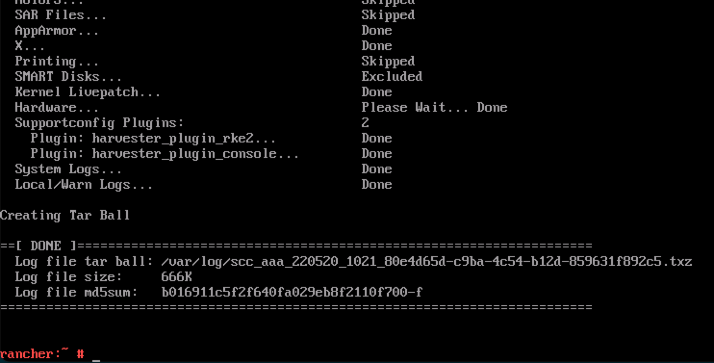

Installation Issues
The following sections contain tips to troubleshoot or get assistance with failed installations.
Logging into the Installer (a live OS)
Users can press the key combination CTRL + ALT + F2 to switch to another TTY and log in with the following credentials:
-
User:
rancher -
Password:
rancher
Meeting hardware requirements
-
Check that your hardware meets the minimum requirements to complete installation.
Stuck in Loading images. This may take a few minutes...
Because the system doesn’t have a default route, your installer may become "stuck" in this state. You can check your route status by executing the following command:
$ ip route
default via 10.10.0.10 dev mgmt-br proto dhcp <-- Does a default route exist?
10.10.0.0/24 dev mgmt-br proto kernel scope link src 10.10.0.15Check that your DHCP server offers a default route option. Attaching content from /run/cos/target/rke2.log is helpful too.
For more information, see DHCP Server Configuration.
Modifying cluster token on agent nodes
When an agent node fails to join the cluster, it can be related to the cluster token not being identical to the server node token.
In order to confirm the issue, connect to your agent node (i.e. with SSH) and check the rancherd service log with the following command:
sudo journalctl -b -u rancherdIf the cluster token setup in the agent node is not matching the server node token, you will find several entries of the following message:
msg="Bootstrapping Rancher (v2.7.5/v1.25.9+rke2r1)"
msg="failed to bootstrap system, will retry: generating plan: response 502: 502 Bad Gateway getting cacerts: <html>\r\n<head><title>502 Bad Gateway</title></head>\r\n<body>\r\n<center><h1>502 Bad Gateway</h1></center>\r\n<hr><center>nginx</center>\r\n</body>\r\n</html>\r\n"Note that the Rancher version and IP address depend on your environment and might differ from the message above.
To fix the issue, you need to update the token value in the rancherd configuration file /etc/rancher/rancherd/config.yaml.
For example, if the cluster token setup in the server node is ThisIsTheCorrectOne, you will update the token value as follow:
token: 'ThisIsTheCorrectOne'To ensure the change is persistent across reboots, update the token value of the OS configuration file /oem/90_custom.yaml:
name: Harvester Configuration
stages:
...
initramfs:
- commands:
- rm -f /etc/sysconfig/network/ifroute-mgmt-br
files:
- path: /etc/rancher/rancherd/config.yaml
permissions: 384
owner: 0
group: 0
content: |
server: https://$cluster-vip:443
role: agent
token: "ThisIsTheCorrectOne"
kubernetesVersion: v1.25.9+rke2r1
rancherVersion: v2.7.5
rancherInstallerImage: rancher/system-agent-installer-rancher:v2.7.5
labels:
- harvesterhci.io/managed=true
extraConfig:
disable:
- rke2-snapshot-controller
- rke2-snapshot-controller-crd
- rke2-snapshot-validation-webhook
encoding: ""
ownerstring: ""|
To see what is the current cluster token value, log in your server node (i.e. with SSH)
and look in the file |
Checking the status of components
Before checking the status of SUSE Virtualization components, obtain a copy of the cluster’s kubeconfig file using either of the following methods:
-
On the SUSE Virtualization UI, go to the Support screen and then click Download KubeConfig.
-
Run the following commands on any of the management nodes:
$ sudo su $ cat /etc/rancher/rke2/rke2.yaml
After you obtain a copy of the kubeconfig file, run the following script against the cluster to check the readiness of each component.
-
SUSE Virtualization components
#!/bin/bash cluster_ready() { namespaces=("cattle-system" "kube-system" "harvester-system" "longhorn-system") for ns in "${namespaces[@]}"; do pod_statuses=($(kubectl -n "${ns}" get pods \ --field-selector=status.phase!=Succeeded \ -ojsonpath='{range .items[*]}{.metadata.namespace}/{.metadata.name},{.status.conditions[?(@.type=="Ready")].status}{"\n"}{end}')) for status in "${pod_statuses[@]}"; do name=$(echo "${status}" | cut -d ',' -f1) ready=$(echo "${status}" | cut -d ',' -f2) if [ "${ready}" != "True" ]; then echo "pod ${name} is not ready" false return fi done done } if cluster_ready; then echo "cluster is ready" else echo "cluster is not ready" fi -
API
$ curl -fk https://<VIP>/versionYou must replace
<VIP>with the actual VIP, which is the value ofkube-vip.io/requestedIP.
Collecting troubleshooting information
Please include the following information in a bug report when reporting a failed installation:
-
A failed installation screenshot.
-
System information and logs.
Please follow the guide in Logging into the Installer (a live OS) to log in. And run the command to generate a tarball that contains troubleshooting information:
supportconfig -k -cThe command output messages contain the generated tarball path. For example the path is
/var/loq/scc_aaa_220520_1021 804d65d-c9ba-4c54-b12d-859631f892c5.txzin the following example:A failure PXE Boot installation automatically generates a tarball if the
install.debugfield is set totruein the configuration file.
Console shows Setting up Harvester after day 0 installation
Issue description
After a successful installation, the console persistently shows Setting up Harvester. While most UI and CLI operations remain unaffected, attempts to start an upgrade are blocked.
The following information is displayed after you run the command kubectl get managedchart -n fleet-local harvester -oyaml:
...
status:
conditions:
- lastUpdateTime: "2025-10-22T08:01:18Z"
message: 'NotReady(1) [Cluster fleet-local/local]; daemonset.apps harvester-system/harvester-network-controller
modified {"spec":{"template":{"spec":{"containers":[{"args":["agent"],"command":["harvester-network-controller"],
"env":[{"name":"NODENAME","valueFrom":{"fieldRef":{"apiVersion":"v1","fieldPath":"spec.nodeName"}}},
{"name":"NAMESPACE","valueFrom":{"fieldRef":{"apiVersion":"v1","fieldPath":"metadata.namespace"}}}],
"image":"rancher/harvester-network-controller:master-head","imagePullPolicy":"IfNotPresent","name":"harvester-network",
"resources":{"limits":{"cpu":"100m","memory":"128Mi"},"requests":{"cpu":"10m","memory":"64Mi"}},
"securityContext":{"privileged":true},"terminationMessagePath":"/dev/termination-log","terminationMessagePolicy":"File",
"volumeMounts":[{"mountPath":"/dev","name":"dev"},{"mountPath":"/lib/modules","name":"modules"}]}]}}}};'
status: "False"
type: ReadyRoot cause
The console runs the following command to determine if the status of the harvester ManagedChart (in the fleet-local namespace) is Ready.
cmd := exec.Command("/bin/sh", "-c", kubectl -n fleet-local get ManagedChart harvester -o jsonpath='{.status.conditions}' |
jq 'map(select(.type == "Ready" and .status == "True")) | length')The ManagedChart CRD is used by SUSE® Rancher Prime: Continuous Delivery to manage resources via GitOps. If any of those resources are directly modified, ManagedChart records and flags the deviations. In the above example, the error occurred because a custom image tag was directly applied to the harvester-system/harvester-network-controller DaemonSet.
To retrieve the full list of ManagedChart resources, run the command kubectl get bundle -n fleet-local mcc-harvester -oyaml.
apiVersion: fleet.cattle.io/v1alpha1
kind: Bundle
metadata:
name: mcc-harvester
namespace: fleet-local
spec:
resources:
- content: H4s...===
encoding: base64+gz
charts/harvester-network-controller/templates/daemonset.yaml
- content: ...Workaround
You can perform either of the following actions:
-
Revert the direct changes made to the affected resources.
-
Update the
ManagedChartCRD with the desired custom configuration usingkubectl edit managedchart -n fleet-local harvester.